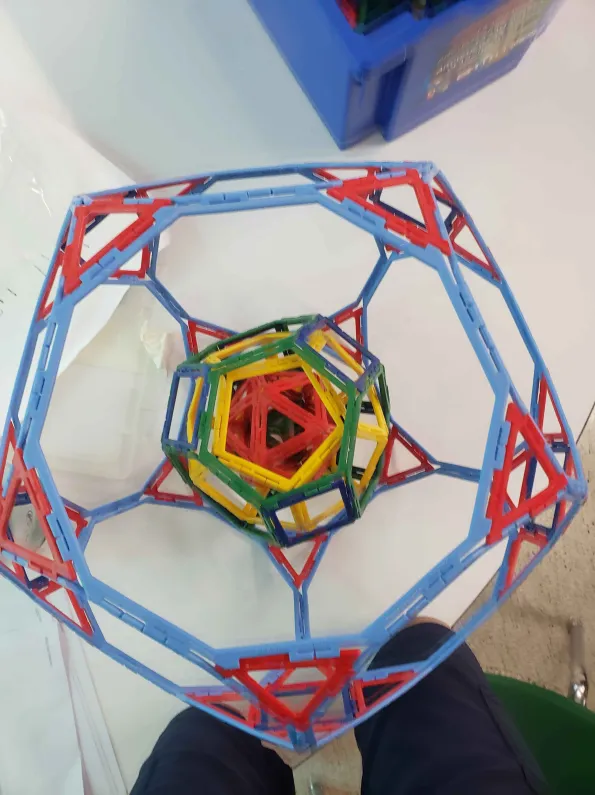

Academia
- I'm a Sophmore in William Mason High School
- I got a 5 on the AP Stats Exam
- I was in the SSA program, wherein I would take Honors classes 2 years before other people took them, completing Algebra 2 in 8th grade
- I've taken 7 art classes as of today, including 4 years of band, and three semesters of Digital Image Design
- I'm also really interested in history
